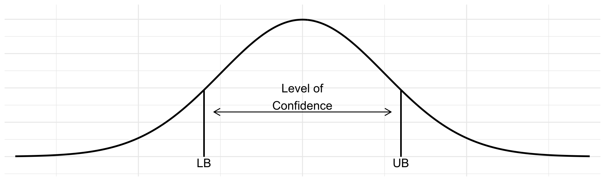
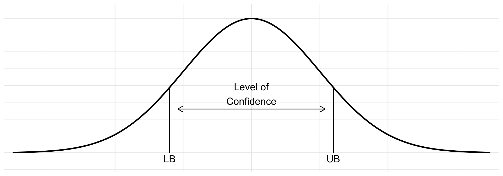
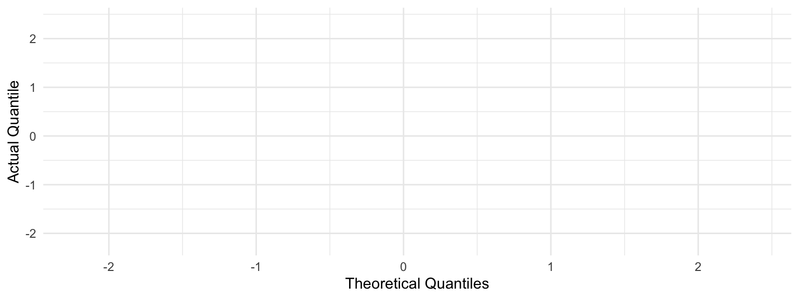
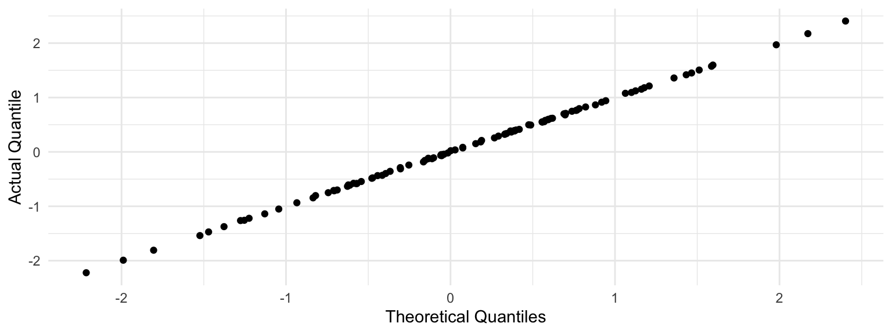
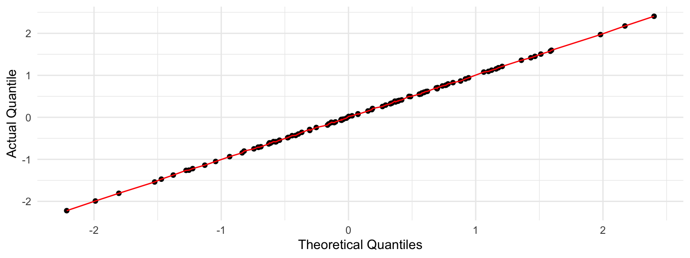
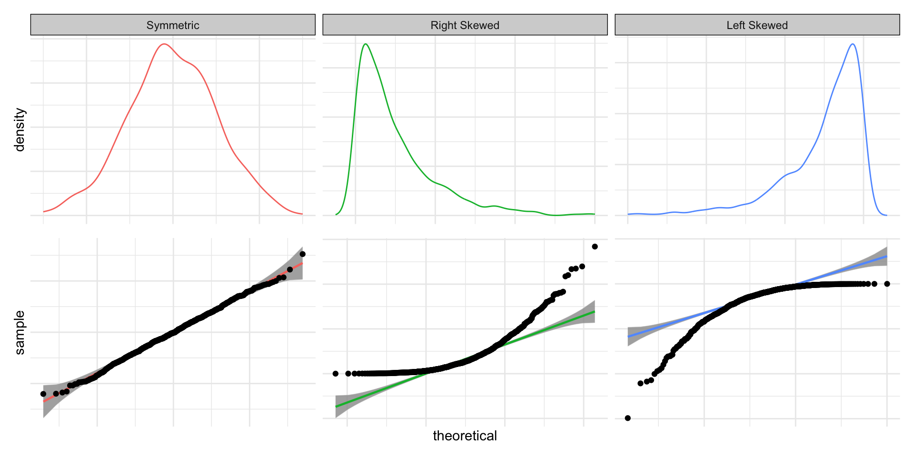
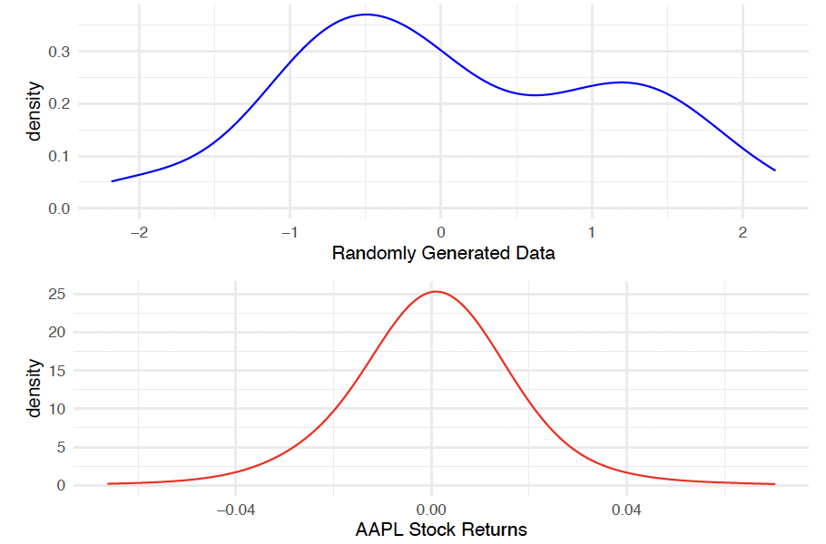
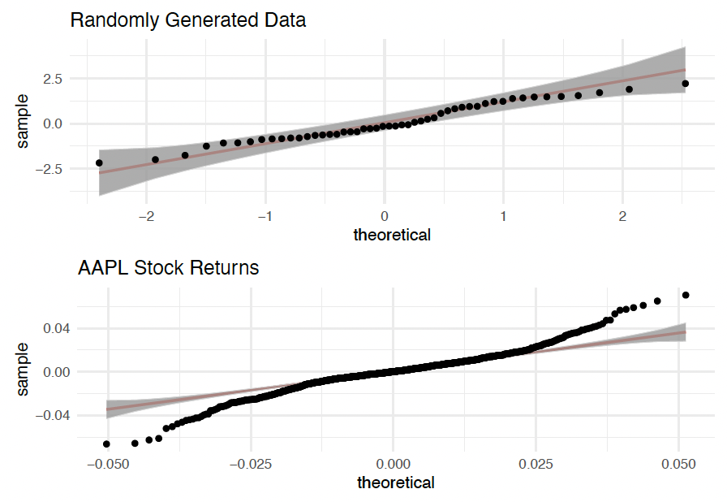
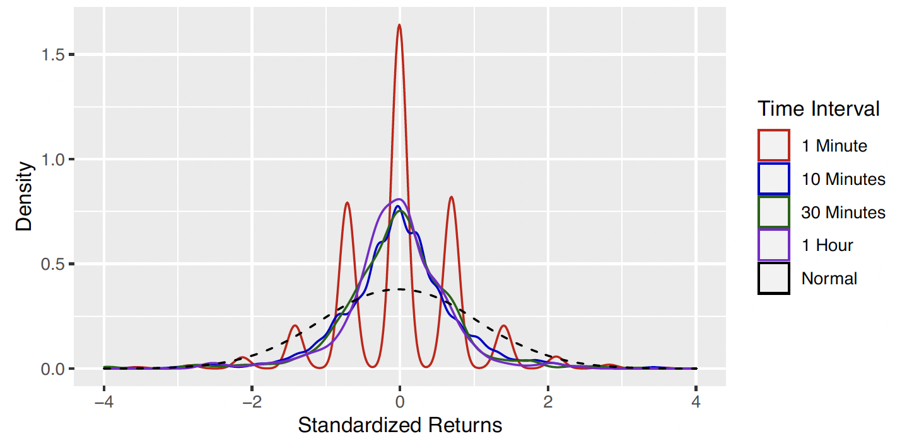
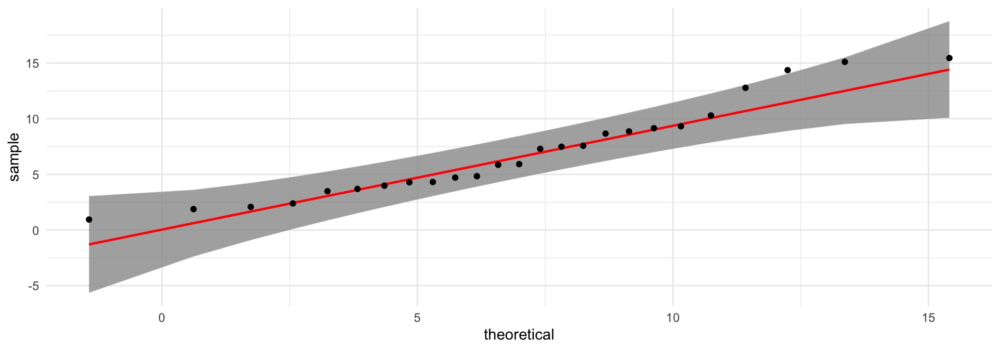

Statistics
Descriptive
Inferential
Goal of Statistics
Generally, the goal of statistics is to determine some characteristic about the population of interest.
Reminder
We use a statistic to estimate a parameter
Example
Suppose the FDA requires more than 50% of possible patients to see improvement for a proposed drug to be approved. A pharmaceutical company in Austin, Tx has developed a new Alzheimer’s drug that is supposed to improve mental cognition, and they want to get the drug approved by the FDA.
What is the population of interest?
All possible Alzheimer patients
What is the parameter of interest?
\(p =\) the proportion of all Alzheimer patients that see improvement from the proposed drug
How would we estimate the parameter of interest?
Conduct a clinical trial and calculate \(\hat{p} =\) sample proportion of Alzheimer patients from the clinical trial that saw improvement
Suppose \(\hat{p} = 50.5\%\), should the drug be approved by the FDA?
We don’t know! \(\hat{p} = 50.5\%\) is from one sample and does not guarantee that \(p > 50\%\)
Issue
We simply can not use a point estimate from one sample and generalize it to the entire population.
Example
Suppose you are interested in renting an apartment in West Campus and someone tells you they pay $1,500 for a one-bedroom apartment. Is $1,500 a good estimate for what ALL one-bedroom apartments in West Campus cost?
No! The apartment prices are going to vary.
What would be a more informative way to estimate the typical price of a one bedroom apartment in West Campus?
A range or interval! For example, ($1200, $2000).
Idea
We need to account for the variability in taking a sample when estimating a parameter
Example
Suppose the FDA requires more than 50% of possible patients to see improvement for a proposed drug to be approved. A pharmaceutical company in Austin, Tx has developed a new Alzheimer’s drug that is supposed to improve mental cognition, and they want to get the drug approved by the FDA. The company just finished its clinical trial and found 50.5% of those in the sample had improved mental cognition.
Suppose, based upon the clinical trial results, a statistical interval for the proportion of Alzheimer patients who would see improvement is found to be (47.2%, 53.8%). Should the drug be approved?
No! Even though for the clinical trial \(\hat{p} = 50.5\%\), the interval for the true population proportion was found to be (47.2%, 53.8%), which includes 50% and values less than it.
Idea of Intervals
Rather than estimating a parameter with one number, it is more informative to estimate it with an interval of reasonable values.
Point Estimate \(\pm\) Error
\(\quad\) which yields
(Lower Bound, Upper Bound)
or
Lower Bound \(<\) parameter \(<\) Upper Bound
For short hand, we will use LB and UB for lower and upper bound, respectively
\(L = UB - LB\)
\(L = 2E \iff E = L/2\)
\(Pt. Est = \frac{LB + UB}{2}\ \) or \(\ UB - E\ \) or \(\ LB + E\)
Example
Suppose a statistical interval for \(\sigma^{2}\) is found to be (3, 7). Find the following.
\(L = UB - LB = 7 - 3 = 4\)
\(E = L/2 = 4/2 = 3.5\)
\(Pt. Est = s^2 = \frac{LB + UB}{2} = \frac{3 + 7}{2} = 5\)
Example
Suppose you are interested in renting an apartment in West Campus and someone tells you they are “confident” that the average rent for a one-bedroom is between ($0, $1 Billion).
Are they correct?
Yes!
Is their interval helpful?
No! They are “confident” that they are correct because their interval is so wide.
Idea
Instead of using a single point to estimate the parameter, we use a range of plausible values i.e an interval. Along with that range, we report how “confident” we are that the interval captures the true value of the parameter.
Example
Suppose we are constructing 90% “confidence” intervals for the population mean \(\mu\). Further suppose that the true value of \(\mu = 50\).
ciPopMean = 50
ciPopSD = 10
ciSampleSize = 30
ciZValues = ({ "90%": 1.645, "95%": 1.96, "99%": 2.576 })
ciSE = ciPopSD / Math.sqrt(ciSampleSize)
ciMargin = 8 * ciSE
ciDomain = [ciPopMean - ciMargin, ciPopMean + ciMargin]
ciPopSize = 500
ciPopRadius = 90
ciPopulation = d3.range(ciPopSize).map(i => {
const r = ciPopRadius * Math.sqrt(Math.random());
const theta = Math.random() * 2 * Math.PI;
return {
id: i,
value: d3.randomNormal(ciPopMean, ciPopSD)(),
x: r * Math.cos(theta),
y: r * Math.sin(theta)
};
})
function ciDrawInterval() {
const z = ciZValues[ciLevel];
const idx = d3.shuffle(d3.range(ciPopulation.length)).slice(0, ciSampleSize);
const sampleValues = idx.map(i => ciPopulation[i].value);
const xbar = d3.mean(sampleValues);
const lower = xbar - z * ciSE;
const upper = xbar + z * ciSE;
const captures = lower <= ciPopMean && ciPopMean <= upper;
return { xbar, lower, upper, captures, sampledIds: new Set(idx) };
}
ciState = Generators.observe(notify => {
ciLevel;
let history = [];
let latestSampledIds = new Set();
notify({ history, latestSampledIds });
const handleDrawOne = () => {
const result = ciDrawInterval();
history = [...history, result];
latestSampledIds = result.sampledIds;
notify({ history, latestSampledIds });
};
const handleDrawMany = () => {
const newIntervals = d3.range(100).map(() => ciDrawInterval());
history = [...history, ...newIntervals];
latestSampledIds = newIntervals[newIntervals.length - 1].sampledIds;
notify({ history, latestSampledIds });
};
viewof ciDrawOne.addEventListener("click", handleDrawOne);
viewof ciDrawMany.addEventListener("click", handleDrawMany);
return () => {
viewof ciDrawOne.removeEventListener("click", handleDrawOne);
viewof ciDrawMany.removeEventListener("click", handleDrawMany);
};
})
ciData = ciState.history.map((d, i) => ({ ...d, index: ciState.history.length - i }))
ciCaptureRate = ciState.history.length > 0
? (100 * d3.mean(ciState.history, d => d.captures ? 1 : 0)).toFixed(1)
: null
ciPopulationViz = {
const size = ciPopRadius * 2 + 20;
const c = size / 2;
const dots = ciPopulation.map(d => {
const hi = ciState.latestSampledIds.has(d.id);
return `<circle cx="${(c + d.x).toFixed(1)}" cy="${(c + d.y).toFixed(1)}" r="3" fill="${hi ? "#BF5700" : "#9CA3AF"}" opacity="${hi ? 1 : 0.5}"></circle>`;
}).join("");
const div = document.createElement("div");
div.innerHTML = `<svg width="${size}" height="${size}" viewBox="0 0 ${size} ${size}">
<circle cx="${c}" cy="${c}" r="${ciPopRadius}" fill="none" stroke="#333" stroke-width="1.5"></circle>
${dots}
</svg>`;
return div;
}
ciPlot = Plot.plot({
width: 480,
height: Math.max(300, ciData.length * 10),
marginLeft: 20,
marginTop: 10,
style: { fontSize: "12px" },
marks: [
Plot.ruleX([ciPopMean], { stroke: "black", strokeDasharray: "4,2" }),
Plot.ruleY(ciData, {
y: "index", x1: "lower", x2: "upper",
stroke: d => d.captures ? "#4C72B0" : "#D62728",
strokeWidth: 2
}),
Plot.dot(ciData, { x: "xbar", y: "index", r: 2, fill: "black" })
],
x: { label: "value", domain: ciDomain },
y: { axis: null, reverse: true }
})
{
const container = document.createElement("div");
container.style.display = "flex";
container.style.alignItems = "flex-start";
container.style.gap = "2em";
container.style.flexWrap = "nowrap";
const popWrap = document.createElement("div");
popWrap.style.textAlign = "center";
popWrap.style.flexShrink = "0";
const popLabel = document.createElement("div");
popLabel.style.fontWeight = "600";
popLabel.style.marginBottom = "0.5em";
popLabel.textContent = "Population";
popWrap.append(popLabel, ciPopulationViz);
const rightWrap = document.createElement("div");
rightWrap.style.display = "flex";
rightWrap.style.flexDirection = "column";
rightWrap.style.alignItems = "center";
rightWrap.style.gap = "0.5em";
const summary = document.createElement("div");
summary.style.fontSize = "1.1em";
summary.innerHTML = ciData.length > 0
? `${ciData.length} interval${ciData.length === 1 ? "" : "s"} drawn — <strong>${ciCaptureRate}%</strong> have captured μ = ${ciPopMean}`
: `Click "Draw Sample" to construct a ${ciLevel} confidence interval for μ = ${ciPopMean}`;
const plotWrap = document.createElement("div");
plotWrap.style.maxHeight = "420px";
plotWrap.style.overflowY = "auto";
plotWrap.appendChild(ciPlot);
rightWrap.append(summary, plotWrap);
container.append(popWrap, rightWrap);
return container;
}Example
Suppose you are interested in renting an apartment in West Campus and someone tells you they are “confident” that the average rent for a one-bedroom is between ($0, $1 Billion). What confidence level do we think this interval is?
100% because the interval is so wide, it will always be correct.
As the confidence % increases, the interval length increases and vice-versa
Reminder

Central Limit Theorem (CLT)
Suppose \(X\) is distributed with mean \(\mu\) and standard deviation \(\sigma\). Then, for a “sufficiently large” sample size \(n\), the sampling distribution of \(\bar{X}\) is \(\bar{X} \stackrel{\cdot}{\sim} \mathcal{N}(\mu, \sigma/\sqrt{n}).\)

Confidence Interval for \(\mu\) with known \(\sigma\)
Suppose \(\sigma\) is known. Then, a (1 - \(\alpha\))% confidence interval for \(\mu\) is given by \(\bar{x} \pm Z_{\alpha/2} \cdot \sigma/\sqrt{n}\)
Example
A hospital wants to estimate the average systolic blood pressure of its adult patients. Suppose it is known that the population standard deviation is 16 mmHg. The hospital took a random sample of 64 patients and found that the mean systolic blood pressure of was \(128\) mmHg for the sample. The hospital wants to construct a 95% confidence interval for the mean systolic blood pressure for the population.
Reminder: CI for \(\mu\) with known \(\sigma\)
Suppose \(\sigma\) is known. Then, a (1 - \(\alpha\))% confidence interval for \(\mu\) is given by \(\bar{x} \pm Z_{\alpha/2} \cdot \sigma/\sqrt{n}\)
Issue
Is it likely that we know \(\sigma\)? No! We don’t know \(\mu\), so how would we know \(\sigma\)?
t Confidence Interval
Suppose \(\sigma\) is unknown. Then, a (1 - \(\alpha\))% confidence interval for \(\mu\) is given by
\(\bar{x} \pm t_{\alpha/2} \cdot s/\sqrt{n}\),
where \(t_{\alpha}\) is the \(\alpha\) percentile of the \(t(\) \(df = n - 1\) \()\) distribution. df stands for degrees of freedom and parameterizes the t-distribution
Assumption for the Confidence Interval: The random variable \(X\) (our data) is normally distributed often referred to as the “normality assumption”
function tdLogGamma(x) {
const g = 7;
const c = [
0.99999999999980993, 676.5203681218851, -1259.1392167224028,
771.32342877765313, -176.61502916214059, 12.507343278686905,
-0.13857109526572012, 9.9843695780195716e-6, 1.5056327351493116e-7
];
if (x < 0.5) {
return Math.log(Math.PI / Math.sin(Math.PI * x)) - tdLogGamma(1 - x);
}
x -= 1;
let a = c[0];
const t = x + g + 0.5;
for (let i = 1; i < g + 2; i++) a += c[i] / (x + i);
return 0.5 * Math.log(2 * Math.PI) + (x + 0.5) * Math.log(t) - t + Math.log(a);
}
function dt(x, df) {
const logCoef = tdLogGamma((df + 1) / 2) - tdLogGamma(df / 2) - 0.5 * Math.log(df * Math.PI);
const logKernel = -((df + 1) / 2) * Math.log(1 + (x * x) / df);
return Math.exp(logCoef + logKernel);
}
tdXMin = -6
tdXMax = 6
tdXValues = d3.range(tdXMin, tdXMax, 0.05)
tdData = tdXValues.map(x => ({ x, density: dt(x, tdDf) }))
Plot.plot({
width: 520,
height: 240,
marginLeft: 55,
marginTop: 25,
style: { fontSize: "13px" },
marks: [
Plot.line(tdData, { x: "x", y: "density", stroke: "#BF5700", strokeWidth: 2 }),
Plot.ruleY([0])
],
x: { label: "t", domain: [tdXMin, tdXMax] },
y: { label: "f(t)", domain: [0, 0.42], labelAnchor: "center", labelArrow: "none" },
subtitle: `t-distribution (df = ${tdDf})`
})QQ-Plot
A QQ-plot plots the percentiles/quantiles of our data against the theoretical quantiles if our data came from the assumed distribution
If our data actually comes from the assumed distribution, what would be the relationship between the theoretical quantiles and the actual quantiles? We would expect the theoretical quantiles \(\approx\) actual quantiles
If our data actually comes from the assumed distribution, what would we expect to see when we plot the theoretical quantiles against the actual quantiles?


A line!

QQ-Plot interpretation
If most of the points for the QQ-plot fall close to the line, then we say it is reasonable to assume our data came from the proposed distribution.
qqnorm() function or qqplotr package the default QQ-plot is for the normal distribution, but QQ-plots can be for other distributions: uniform, exponential, beta, ect.car package
Example
Consider random generated data and also Stock Return data for Apple in 2018. Which data appears to follow the normal distribution?



Example
A hospital wants to estimate the average bacterial count remaining on surgical instruments after a sterilization procedure. The hospital took a random sample of 25 sterilized instruments and found that the mean bacterial count was 6.8 CFU, with a sample standard deviation of 4.5 CFU. The hospital wants to construct a 90% confidence interval for the mean bacterial count for all instruments sterilized using this procedure.
| instrument | CFU |
|---|---|
| 1 | 4.2943775 |
| 2 | 5.8643477 |
| 3 | 14.3672637 |
| 4 | 7.2935651 |
| 5 | 7.5729546 |
| 6 | 15.1104568 |
| 7 | 9.1492481 |
| 8 | 0.9453476 |
| 9 | 3.6936825 |
| 10 | 4.8401088 |
Before, we calculate the interval, what must verify the assumption for the t-interval. What is the assumption for the t-confidence interval?
Normality
How we do check the assumption?
QQ-plot

Does the assumption seem reasonable? Yes! Most of the points are within the bounds and close to the line
Example
A hospital wants to estimate the average bacterial count remaining on surgical instruments after a sterilization procedure. The hospital took a random sample of 25 sterilized instruments and found that the mean bacterial count was 6.8 CFU, with a sample standard deviation of 4.5 CFU. The hospital wants to construct a 90% confidence interval for the mean bacterial count for all instruments sterilized using this procedure.
Now that we verified the assumptions for the interval, we can continue to construct the t-confidence interval.
t.test() function. It has the following arguments:
x: the numeric vector of dataconf.level: the confidence level of the interval (default is 0.95)alternative, mu: used for hypothesis tests, so we can leave these at their defaults for nowt.test() returns a lot of output, so we use $conf.int to extract only the intervalDerik Boonstra, Ph.D.